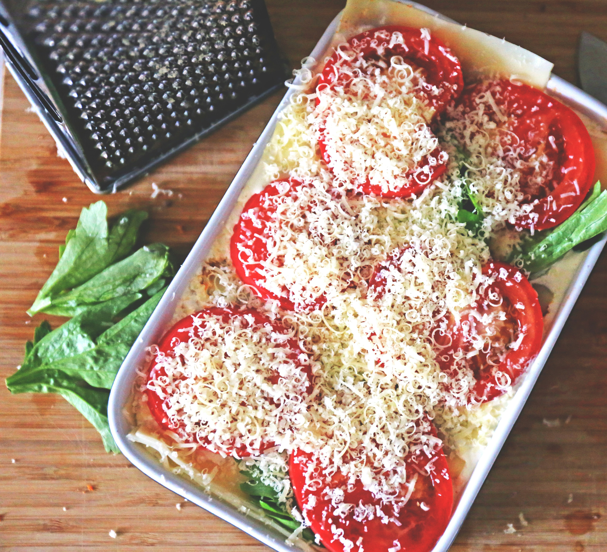

Home
Make it original
Make it cheesy
Lasagna

This Vegetarian Lasagna is hearty, colorful, and full of flavor, proving you don’t need meat to enjoy a rich and satisfying lasagna. Layers of pasta are stacked with a medley of sautéed vegetables—like zucchini, bell peppers, mushrooms, and spinach—paired with a creamy ricotta-Parmesan filling. Everything is brought together with tangy marinara sauce and melty mozzarella cheese. It’s a vibrant, nutrient-packed meal that’s both comforting and wholesome. Ideal for weeknight dinners, meatless Mondays, or serving guests with varied dietary preferences, it’s a delicious celebration of garden-fresh flavors.
Ingredients:
-
9 lasagna noodles (or no-boil noodles)
-
1 egg
-
1 jar (24 oz) marinara sauce (any kind you like)
-
2 cups shredded mozzarella cheese
-
2 cups ricotta cheese
-
1/4 cup grated Parmesan cheese
-
1 diced zucchini
-
1 diced bell pepper
-
1 cup chopped mushrooms
-
1 small, chopped onion
-
2 cups spinach
-
seasoning to taste. Suggested: olive oil, salt, pepper and italian seasoning
Steps
-
Cook the noodles (if not using no-boil). Drain and set aside.
-
Saute the vegetables: Heat olive oil in a skillet. Add onion, then zucchini, pepper, mushrooms. Cook until softened. Add spinach, cook until wilted. Season well. Let cool slightly.
-
Combine ricotta, egg, Parmesan and seasoning.
-
Spread a little sauce on the bottom of a baking dish. Add a layer of noodles. Spread some ricotta, sauted veggies, mozzarella and sauce. Repeat layers (usually 3 times). Finish with sauce and top with tomatos, sauce and cheese.
-
Cover with foil and bake at 375°F (190°C) for 30–40 minutes.
-
uncover and bake another 10-15 minutes, until hot and bubbly.
-
Let it rest for 10 minutes before serving.